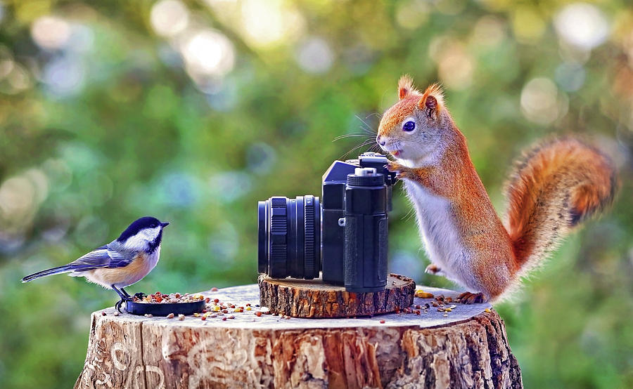

Video games such as Mario Kart and Smash Bros Ultimate are played on the big screen in the MPR. Happens once a week after school. Great for casual and competitive gamers alike. It is different from ESports league, as this club focuses on Nintendo Switch games.
Clubs at PTEC
CyberPatriot

This club is all about hardening operating systems on computers by scrutinizing for, identifying and eliminating vulnerbilities. Practices happen after school. After many practices, students compete in the CyberPatriot Competition.
ESports League

Great for competitive gamers, PTEC has ESports teams for Rocket League and League of Legends. Students compete in-game against other students from other schools with ESports teams.
Games Club


Photography Club
Photography club is good for students who like taking pictures and would like to sharpen their photography skills, and share them with fellow classmates. Takes place during lunch, once a week.